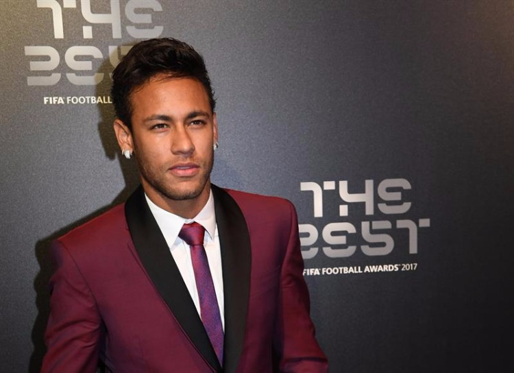

neymar começou no Santos FC, onde passou a ser reconhecido nacional, internacional e mundialmente, chegando à final de um Mundial de Clubes em 2011.
Conheça mais de sua historia no Santos Após essa jornada pelo Santos, Neymar teve uma proposta para jogar em outro clube. Um clube da poderosa e influente Europa, onde se reúne os melhores dos melhores jogadores em que disputam os principais campeonatos mundiais como por exemplo a Champions League e a Europa League, sendo elas as duas principais.E essa proposta foi enviada pelo Barcelona Futebol Clube, um dos maiores de todos, com um dos melhores elencos da época, se nao o melhor pois estava voltando de uma final de Mundial de Clubes contra o proprio Santos de NeymarNeymar aceitou se juntar ao time "Catalão" como é conhecido, e la foi onde as pessoas dizem ser seu "prime" seu melhor futebol apresentado conheça um pouco mais de sua história no BarcelonaPassagem pelo barcelona

Depois de sua passagem pelo Barcelona o Neymar o que ja era muito conhecido acabou sendo mundialmente famoso, todo mundo o conhecia e ele estava no time dos sonhos de qualquer um mas tinha um porém, um grande porém.Sua genialidade estava sendo ofuscada por messi, seu companheiro e melhor amigo. Neymar sonhava com uma bola de ouro mas com a midia espanhola dando meritos para messi como por exemplo depois da grande remantada que foi dado ao caso em que o bracelona ganhou um jogo "impossivel" com o Neymar como melhor em campo, mas a midia deu o crédito ao MessiApós perder a bola de ouro de 2015 que muitos dizer ser a bola de ouro mais roubada da história mesmo com suas controversias, mas por causa disso o PSG o procurou por ele ter comandado o time nessa virada inclusive sendo em cima do próprio PSG, talvez seja por isso que procuraram ele, e com uma proposta envolvendo muito dinheiro ele foi e la sua vida mudou e mudou muitoConheça mais de sua história no PEQUENO PSG Depois de uma passagem por assim dizer, conturbada.. Neymar queria sair do clube mesmo com a renovação ate 2027, mas para sair o outro clube teria que pagar a taxa de salario para o PSG pois seria uma quebra de contrato, e esta taxa era muito alta e qual time da europa poderia pagar? Newcastle? Manchester city o campeão atual da champions? ate poderiam, mas eles decidiram investir nos mais novos, com o dinheiro que seria gasto em Neymar eles poderiam contratar um time inteiro.Mas então qual time o contrataria? ele queria sair e a torcida nao o queria mais, porém ele ja teve rixa com essa torcida e fez as pazes, mas agora não tinha como e ele queria sair em definitivo, foi então que receber uma proposta do Al Hilal um time saudita, que tem o dinheiro para contratar o Neymar mesmo com a taxa, dito e feito o contrato foi formado e ele partiu pro "sauditão" mas nao pense que o futebol de la é ruim, tem muitos jogadores famosos que foram para láficou interessado? Conheça mais sobre essa passagem ainda curta pelo Al Hilal Neymar não teve sua carreira só marcada por passagem em clubes, ele também joga pela Seleção do Brasil e faz HISTÓRIA mesmo sendo o cara que leva o Brasil para frente, o famoso termo "carrega nas costas"Conheça essa história escrita na Seleção Essa é um pouco da história de neymar, mas tem muito a falar, como por exemplo seus dois filhos